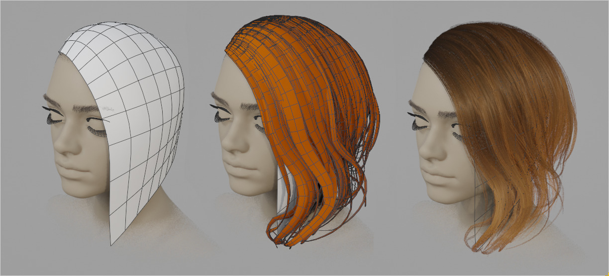
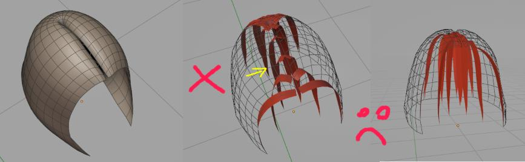
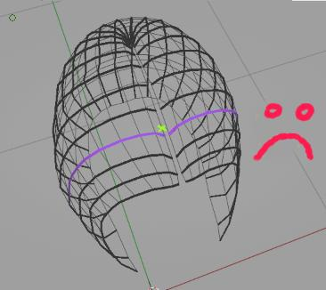
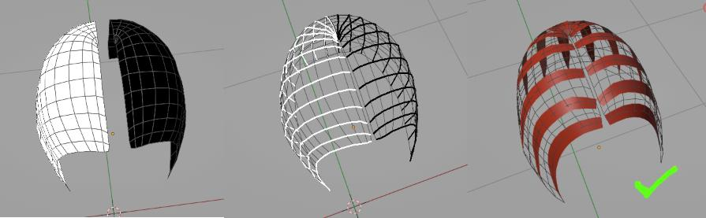

Curve from grid surface¶
It uses Strands from Grid Surface Hair Generator, where active mesh will guide be used for guiding hair strands flow. Guide mesh has to have grid topology: made of quads,

Useful for: long hair, eyelashes, hair buns, layered type of hair etc. It's designed to generate low poly mesh, so it runs smoothly mobile games.
Use Ctrl+Shift+H > Curves from grid surface to add Hair System preset, where active mesh will guide generated strands
Note: In older Hair Tool 2.4x series, you could directly edit generated curves (in edit mode). In HTool 3.x these curves are generated procedurally in geometry nodes, thus you cannot edit them directly. First use Bake option to convert these procedural curves to real geometry.
Note: If you want to cover head scalp uniformly with hair, then use standard Hair System with Strand Generator instead.
Video Tutorial¶
First 12 minutes shows how to use 'Curves from Grid Surface'. Rest is about creation of actual hair - can be skipped
Proper grid mesh¶
Guide mesh has to be made from quads and one border edge loop has to be mark as sharp (or crease): Ctrl+E -> Mark Sharp/Crease - this edge will become roots of hair strands.

Example of proper grid meshes topologies (for actual hair you would want to model this better - following main hair masses and hair flow):

If we flatten these 3d meshes we would get 2D grid:

Selected Parameters¶
Control basic properties like generated curves amount, number of points per spline etc. You can use topology of grid surface to guide density of generated strands. In places where grid surface have denser loops you can generate more strands or give more points to each strand.
 Strands count - number of strands to generate
Strands count - number of strands to generate
 Uniform Strands Spacing - Distribute strands uniformly. If not, then more strands will be placed at denser grid surface areas (in this case - more on right)
Uniform Strands Spacing - Distribute strands uniformly. If not, then more strands will be placed at denser grid surface areas (in this case - more on right)
 Uniform Points Spacing - Distribute points uniformly along each strand. If not, then more points will be placed at denser grid surface areas (in this case - more on right)
Uniform Points Spacing - Distribute points uniformly along each strand. If not, then more points will be placed at denser grid surface areas (in this case - more on right)
 Randomize Spacing - Randomize spacing between strands
Randomize Spacing - Randomize spacing between strands
Use Crease Edge - by default strands will be generated from edge marked as sharp. You can use crease edge instead, if you want to generate strands from creased edges
Hook First Segment - use if you want to 'glue' first segment of each strand to the first two loops of grid surface. This helps with embedding hair strand roots into scalp, without hair clipping through head
Limitations¶
Update: This issue if fixed in Hair Tool 4.x, where instead of using Blender built-in hair interpolation, I implemented my own interpolation algorithm.
In Hair Tool 3.x Curves from Grid Surface is using new strand interpolation (based on Geometry Nodes). It has some limitations, see example below:

Example of poor strand interpolation, when using 'Curves From Grid'. Strands do not adhere to the guide grid surface and instead follow path downwards

The reason and explanation: imagine new strand (marked as X above) is picking 2 closest guides; it found one guide to right one to left - which is causing the strand to go to the center (average of both guides)

The fix: split guide grid mesh in to mesh islands, this will split guides too (marked with black and white). Now new strand will follow only group of strands (only white or only white) - resulting in clean interpolation on right
The reason why splitting guide mesh, into two or more mesh islands work is due to how Hair Interpolation in HTool works - strands spawned on one island, will only follow guides from that mesh island.
Note:
You do not have to split base mesh by ripping geometry. In above case I turned Off 'merge' option in mirror modifier, thus righ and left side are seen as separate islands. Or you could use edge split modifier
In video above I explained and showed how to fix the interpolation issue